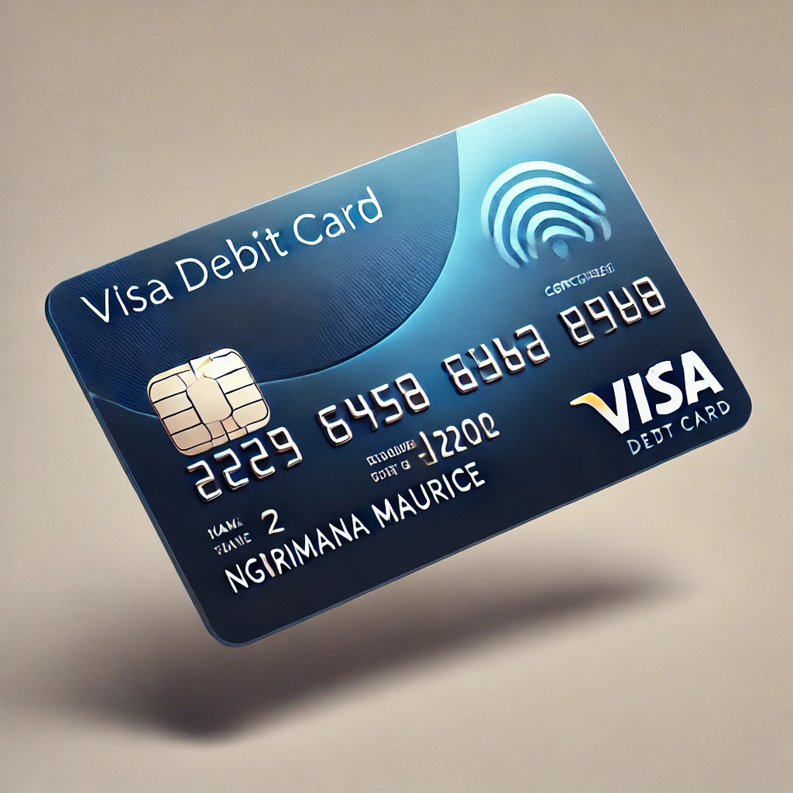
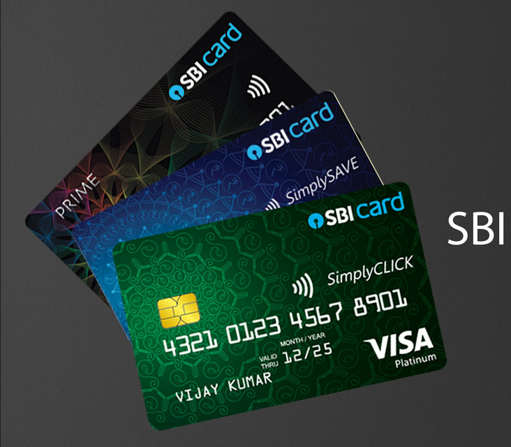
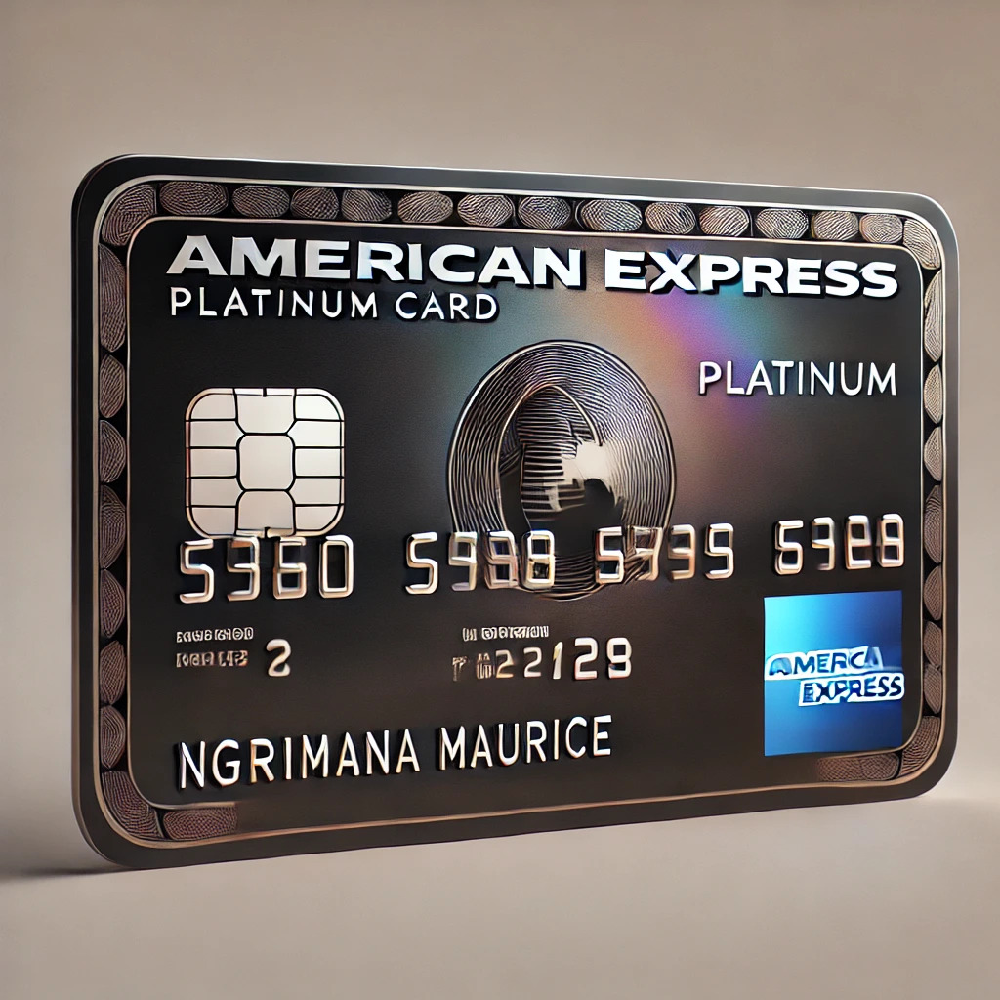

Current Banking (Modern Digital Banking)
 Uses online banking and mobile apps for real-time transactions.
Offers instant payments, digital wallets, and contactless transactions.
Focuses on speed, convenience, and automation with AI-driven insights.
Uses online banking and mobile apps for real-time transactions.
Offers instant payments, digital wallets, and contactless transactions.
Focuses on speed, convenience, and automation with AI-driven insights.
create accounts acounts?
Classic Banking (Traditional Brick-and-Mortar Banking)
Requires physical visits to branches for major transactions. Uses paper checks, passbooks, and face-to-face banking services. Relies on manual processing, making transactions slower than modern banking.create accounts acounts?
Study Banking (Student & Educational Banking)
Provides low-fee or no-fee student accounts with online banking features. Offers budgeting tools, savings options, and student loan management. Focuses on financial education and responsible money management for students.
create accounts acounts?
Debit Card (Everyday Spending & Online Payments)
 Linked directly to your bank account—spend only what you have. Used for online banking, shopping, and ATM withdrawals worldwide. No credit check required, but fraud protection varies by bank.
aplly for card desire beastDebit Card
Credit Card (Borrow Now, Pay Later)
 Allows you to borrow money up to a limit and pay it back later. Comes with interest rates, but paying on time avoids extra charges. Useful for building credit, earning rewards, and emergency expenses.
aplly for card desire beastCredit card
Prepaid Card (No Bank Account Needed)
 Not linked to a bank—you load money onto it before spending. Works like a debit card but doesn’t require a credit check or account. Great for budgeting, travel, and online purchases without overdrafts.
aplly for card desire beastprepaidcard